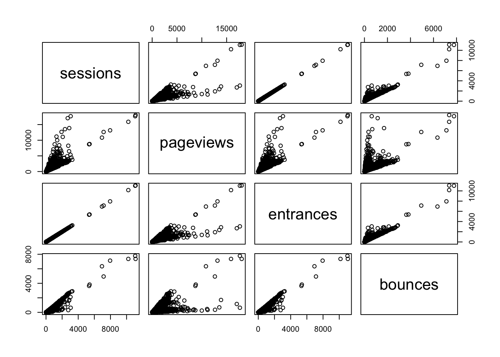
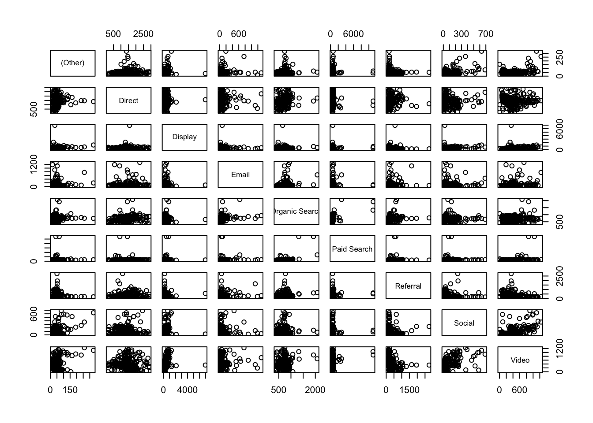

Correlation
Correlation is a number that describes how much relationship is between two variables.
In digital analytis terms, you can use it to explore relationships between web metrics to see if an influence can be inferred, but beware the 101 stat advice of not accounting for other factors. This is fairly rampant in the SEO industry. For instance, a high correlation between social shares and SEO position could mean:
- Social shares influence SEO position
- SEO position influences social shares
- Social shares and SEO position are influenced by a third factor (such as Brand strength)
- The relationship was a chance error
It is rare to see the last three possibilties considered.
Performing correlation analysis in R
That said, correlations can really help get an understanding of your data and hint at relationships.
The base function cor() will perform correlations on a data.frame.
The below example uses the dataset used previously:
web_data <- read.csv("./data/gadata_example_2.csv", stringsAsFactors = FALSE)
head(web_data)## X date channelGrouping deviceCategory sessions pageviews entrances
## 1 1 2016-01-01 (Other) desktop 19 23 19
## 2 2 2016-01-01 (Other) mobile 112 162 112
## 3 3 2016-01-01 (Other) tablet 24 41 24
## 4 4 2016-01-01 Direct desktop 133 423 133
## 5 5 2016-01-01 Direct mobile 345 878 344
## 6 6 2016-01-01 Direct tablet 126 237 126
## bounces
## 1 15
## 2 82
## 3 19
## 4 61
## 5 172
## 6 77web_data_metrics <- web_data[c("sessions","pageviews","entrances","bounces")]
## see correlation between sessions an pageviews
cor(web_data_metrics)## sessions pageviews entrances bounces
## sessions 1.0000000 0.8384321 0.9999923 0.9411201
## pageviews 0.8384321 1.0000000 0.8377078 0.6364753
## entrances 0.9999923 0.8377078 1.0000000 0.9416535
## bounces 0.9411201 0.6364753 0.9416535 1.0000000When working with correlations, its always a good idea to view an exploratory plot to see if any outliers are effecting your metrics:
pairs(web_data_metrics)
How do web channels correlate?
One useful piece of analysis is seeing how web channels possibly interact.
To get the data in the right format, the below code pivots via the reshape2 package:
## get only desktop rows, and the date, channelGrouping and sessions columns
per_channel <- web_data[web_data$deviceCategory == "desktop", c("date","channelGrouping","sessions")]
## use reshape2's dcast to pivot the data
library(reshape2)
pivoted <- dcast(per_channel, date ~ channelGrouping, fun.aggregate = sum, value.var = "sessions")
head(pivoted)## date (Other) Direct Display Email Organic Search Paid Search
## 1 2016-01-01 19 133 307 17 431 555
## 2 2016-01-02 156 1003 196 43 1077 1060
## 3 2016-01-03 35 1470 235 29 696 489
## 4 2016-01-04 31 1794 321 70 1075 558
## 5 2016-01-05 27 1899 309 74 1004 478
## 6 2016-01-06 21 1972 204 299 974 494
## Referral Social Video
## 1 131 68 0
## 2 226 158 3
## 3 179 66 90
## 4 235 46 898
## 5 218 47 461
## 6 246 47 418Lets now see if Display and Paid correlate:
cor(pivoted$Display, pivoted$`Paid Search`)## [1] 0.05289315Not at all! See the plot:
plot(as.Date(pivoted$date), pivoted$Display, type = "l")
lines(as.Date(pivoted$date), pivoted$`Paid Search`)
The two differing spikes hint at why the correlation failed.
plot(as.Date(pivoted$date), pivoted$Display, type = "l")
lines(as.Date(pivoted$date), pivoted$`Paid Search`)
cor(pivoted[-1])## (Other) Direct Display Email
## (Other) 1.00000000 0.12743479 0.11976504 0.09419624
## Direct 0.12743479 1.00000000 0.04036891 0.07208526
## Display 0.11976504 0.04036891 1.00000000 0.01001570
## Email 0.09419624 0.07208526 0.01001570 1.00000000
## Organic Search 0.16660245 0.21963582 -0.04628897 0.26241579
## Paid Search 0.03461935 -0.02233086 0.05289315 0.03498069
## Referral -0.04104845 0.09400806 -0.10116768 0.13186681
## Social 0.46029627 -0.04864601 0.19312976 0.03326082
## Video 0.37183368 0.01428600 0.27306324 0.13428036
## Organic Search Paid Search Referral Social
## (Other) 0.16660245 0.03461935 -0.04104845 0.46029627
## Direct 0.21963582 -0.02233086 0.09400806 -0.04864601
## Display -0.04628897 0.05289315 -0.10116768 0.19312976
## Email 0.26241579 0.03498069 0.13186681 0.03326082
## Organic Search 1.00000000 0.50911991 0.19389553 -0.04091869
## Paid Search 0.50911991 1.00000000 0.07755885 -0.01073152
## Referral 0.19389553 0.07755885 1.00000000 -0.10516192
## Social -0.04091869 -0.01073152 -0.10516192 1.00000000
## Video 0.08146977 0.22177828 -0.25423741 0.49831671
## Video
## (Other) 0.37183368
## Direct 0.01428600
## Display 0.27306324
## Email 0.13428036
## Organic Search 0.08146977
## Paid Search 0.22177828
## Referral -0.25423741
## Social 0.49831671
## Video 1.00000000pairs(pivoted[-1])
Auto and cross correlation
The correlations above all compare the same date point, but what if you expect a lagged effect?
Auto and cross correlations are useful when dealing with time-series data, and can examine if a metric has an influence on itself or another after some time has passed.
This can be a powerful way to find if say a TV or Display campaign increased SEO traffic the next few weeks afterwards.
The below compares paid search on SEO - the correlation for different lags of days is the result - we can see a correlation at 0 lag at around 0.5, but the correlation increases if you compare the SEO peaks to the paid peaks
ccf(pivoted$`Paid Search`, pivoted$`Organic Search`)
Looking at the data plots you can see a peak that most likely created this correlation peak in the data, with the red (Paid) peak precedding the Organic.
## zoom in to the peak, and scale the metrics so they have same size peaks to illustrate
plot(as.Date(pivoted$date)[31:90], scale(pivoted$`Paid Search`[31:90]), type = "l", col = "red")
lines(as.Date(pivoted$date)[31:90], scale(pivoted$`Organic Search`[31:90]), col = "blue")